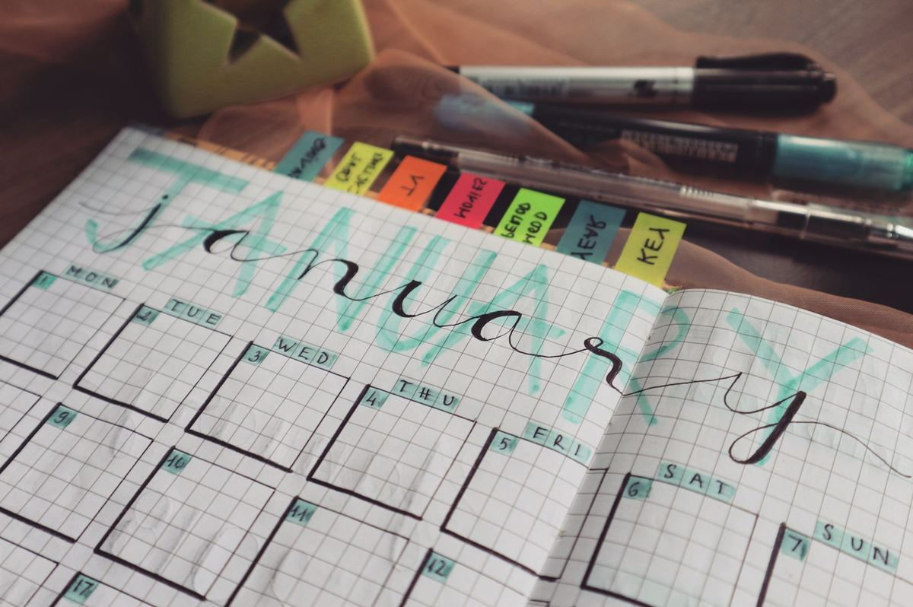

Все сроки сдачи – в одном списке
Учебный планировщик собирает задания по всем дисциплинам в одном месте и показывает, сколько дней осталось до каждого срока.
Задания приходят из трех мест
Лабораторная выложена в личном кабинете, тест – в системе дистанционного обучения, а перенос срока объявили в чате группы. Чтобы ничего не пропустить, приходится каждый день проверять все три.
Что будет в первой версии
Список заданий
Дисциплина, название и срок. Задания сортируются по дате сдачи.
Календарь
Сроки на неделю и на месяц: видно, где загруженные недели.
Фильтры и отметки
Можно оставить одну дисциплину и отметить сданное.
Напоминания позже
Письмо на почту за несколько дней до срока.
Расписание группы позже
Занятия и консультации рядом со сроками сдачи.
Как это работает

Добавьте задание
Выберите дисциплину, впишите название и срок сдачи из личного кабинета или чата.
Смотрите, что горит
Список сам встает по порядку, а близкие сроки подсвечиваются красным.
Отмечайте сданное
Выполненное уходит вниз и не мешает видеть то, что еще впереди.
Попробуйте прямо здесь
Добавьте пару заданий. Данные хранятся только на этой странице и пропадут после обновления.
План разработки
Сервис делается как учебный проект. Этапы и сроки взяты с доски проекта.
- Анализ предметной области и конкурентов
- Сбор и анализ требований
- Проектирование интерфейса и базы данных
- Разработка базовой версии
- Календарь и напоминания
- Тестирование
- Публикация
- Сопровождение и сбор отзывов
Частые вопросы
Задания подтянутся из личного кабинета сами?
Нет. В первой версии задания добавляются вручную: так проще проверить, удобен ли сам список.
Нужна ли регистрация?
Для демо на этой странице – нет. В сервисе вход понадобится, чтобы список был доступен с телефона и ноутбука.
Будет ли мобильное приложение?
Пока нет. Сайт рассчитан на экраны от 360 пикселей, поэтому им удобно пользоваться с телефона.
Это платно?
Нет. Это учебный проект, он не продается и не собирает данные.